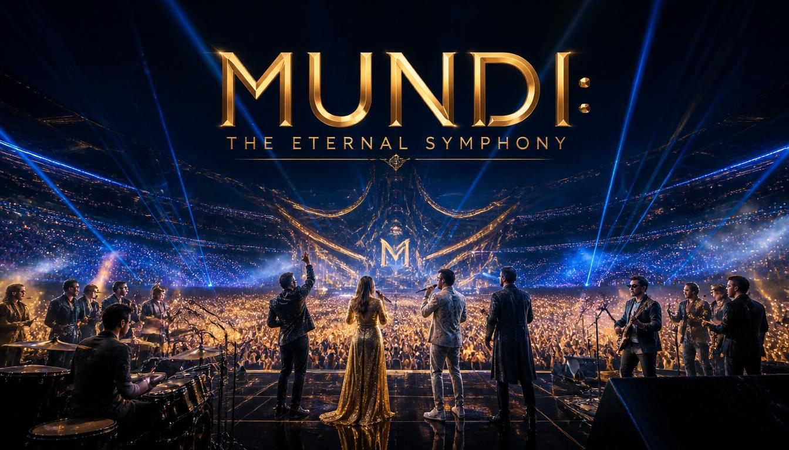

Abertura dos Portões & Warm-up
O estádio abre as portas com DJs globais de música eletrônica ambientando o espaço e preparando o público.
O MUNDI não é apenas um festival; é um marco cultural sem precedentes, projetado para celebrar o ápice da expressão musical humana. Realizado em um megaestádio futurista construído especialmente para a ocasião, o evento reúne mais de um milhão de pessoas na plateia e bilhões de espectadores via transmissão holográfica global simultânea.

O estádio abre as portas com DJs globais de música eletrônica ambientando o espaço e preparando o público.
Os maiores fenômenos do Pop atual abrem oficialmente os shows com coreografias massivas e os hits mais tocados no mundo.
A banda assume o palco principal. O holograma de Chester Bennington se junta a eles para cantar clássicos como "In the End" e "Numb".
Grandes nomes do rock dos anos 90 e 2000 fazem apresentações em sequência, mantendo a energia do estádio no topo.
O holograma de Elvis Presley aparece acompanhado por uma mega banda ao vivo e pelos maiores guitarristas da atualidade.
Uma linha do tempo viva com os maiores rappers de todos os tempos e os principais nomes da atualidade dividindo beats históricos.
O holograma de Michael Jackson comanda o espetáculo ao lado das maiores estrelas do pop moderno em um palco ultra-tecnológico.
O holograma de Freddie Mercury lidera o estádio inteiro nos clássicos "We Will Rock You" e "Bohemian Rhapsody" com grandes vocalistas convidados.
Os maiores artistas vivos de todos os genres sobem ao palco juntos para um show inédito de improvisação, mashups e colaborações históricas.
Os maiores DJs do mundo assumem as picapes em um show de encerramento massivo com lasers de alta potência e pirotecnia.
O templo sagrado da música mundial recebe a maior estrutura já feita para um evento. Localizado em Londres, Reino Unido, Wembley foi escolhido por seu histórico lendário e capacidade monumental.